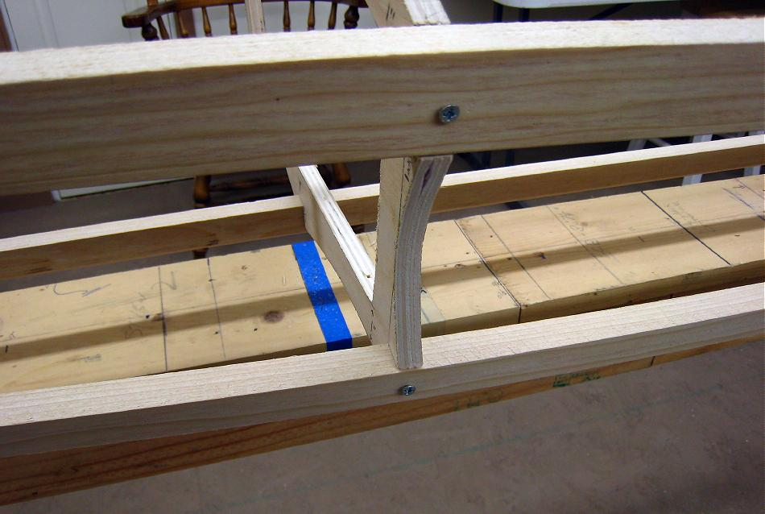

| Gluing Stringers | Menu Previous Page Next Page |
|

There are two options for holding stringers tightly in place while gluing. One is to wood screw the stringers in place while the epoxy cures, and the other is to use plastic ties for the same purpose. The wood screw process will be discussed first, and is the one used on the Sea Bee shown above.
At each stringer to cross section attachment point, drill a small pilot hole centered on the stringer and cross section. Screw in a 1 1/4" wood screws at each attachment point. In addition to firmly compressing the epoxy between the gunwale and chine stringers to cross section attachments, the wood screws will serve as guide holes for drilling and inserting 1/4" dowels later in the process. Screws will not be required at the keel or deckridge connections. |
|